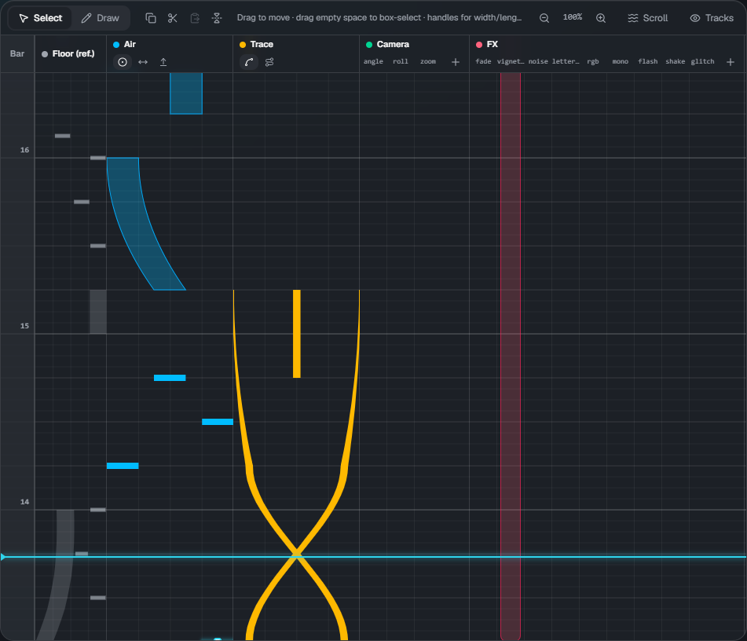
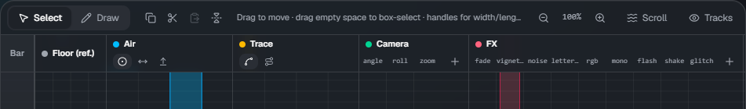
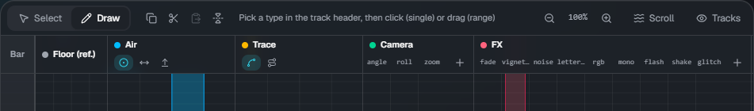
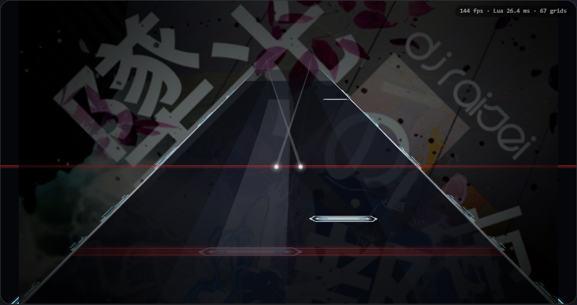

Timeline

Time flows from bottom to top (the same direction as the Malody editor). The light blue line is the current position (the playhead).
The numbers on the left are bar numbers. Bar lines follow the measure line of lane3d.ex.
Tracks
| Track | What goes there |
|---|---|
| Bar | The bar ruler. Click or drag to move the playhead there |
| Floor (ref.) | Floor notes from the chart (.mc). View only, not editable. Colored by note group |
| Air | AirTap, AirSlide, AirLift |
| Trace | Trace (line), Guide (band on the floor) |
| Camera | cam. One column per item (angle, roll, zoom, ...). Click ＋ to add a column |
| FX | fx. One column per type (fade, flash, glitch, ...). Click ＋ to add a column |
Use Tracks at the top right to hide or show tracks.
The tool bar

From left to right: Select / Draw, copy, cut, paste, mirror, a hint for the current mode, zoom, Scroll (Scroll), and visible tracks.
Selecting and moving (Select mode)
In Select mode (V):
- Click an element to select it, drag to move it
- Drag the handles of the selected element to change its width, length, end position, or the height of a trace
- Drag on empty space to box-select. Shift+click adds to or removes from the selection
- Delete (or Backspace) deletes, Esc clears the selection
- When several elements are selected, they move together
Adding (Draw mode)

Switch to Draw (B) and click or drag in a track to add elements.
- In the Air and Trace tracks, pick the type with the small buttons in the header (this also switches to Draw mode)
- Click for a single note (AirTap), drag for a range (AirSlide, Trace, ...). Where you drag up to is the end
- For Camera and FX, click or drag in the column of the item you want
- New notes use the width you changed last
If something is selected, the first click in a track only clears the selection (click again to add).
Snapping
Beat snap and X snap in the toolbar set the steps for placing and moving.
- Beat snap: beat division (1/1 to 1/16)
- X snap: horizontal step (8, 16, 32, 64; 64 is about one lane)
- The switch on the left turns each on or off. Holding Alt bypasses both
Zoom
Ctrl+wheel, or − / ＋ in the tool bar, changes the height of one beat from 25% to 400%. Click the percentage to reset to 100%.
Copy, paste, mirror
| Action | Key |
|---|---|
| Select all | Ctrl+A |
| Copy / cut | Ctrl+C / Ctrl+X |
| Paste (at the playhead) | Ctrl+V |
| Mirror horizontally | H |
Playback and preview

- Space plays / pauses, Home goes to the start. The toolbar shows the time, bar:beat and BPM
- The preview runs the skin's own script, so it looks the same as in the game. Changes appear after a short moment
- Tap sound: during playback, a sound plays at the head of floor and air notes (not for traces). Use ▾ to change the volume
Keyboard shortcuts
| Key | Action |
|---|---|
| Space | Play / pause |
| Home | Go to start |
| V / B | Select mode / Draw mode |
| Delete, Backspace | Delete the selected elements |
| Esc | Clear the selection |
| Ctrl+A / C / X / V | Select all / copy / cut / paste |
| H | Mirror horizontally |
| Alt (hold) | Bypass snapping |
| Ctrl+wheel | Zoom |
| Ctrl+S / Ctrl+Shift+S | Save / save as download |
While you are typing in a text field, only the save shortcuts work.